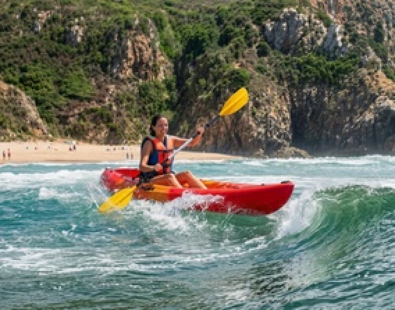
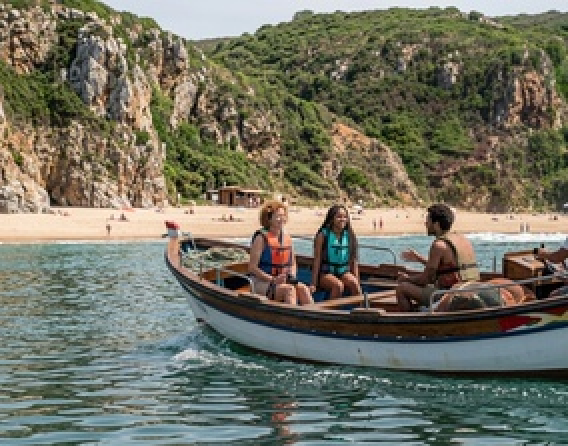
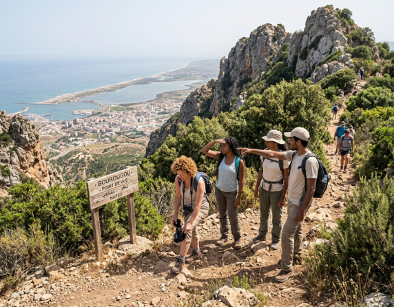
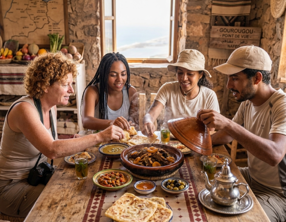
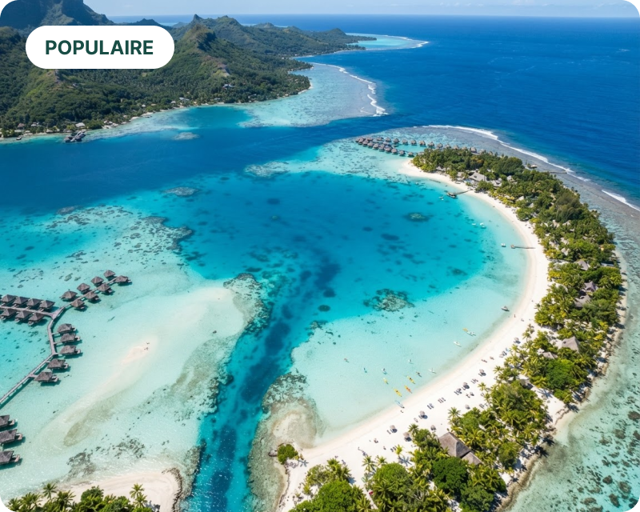

Vivez des aventures inoubliables entre mer et montagne
Kayak, balades en bateau, randonnées et saveurs locales au cœur de la lagune de Marchica.
Réserver mon aventureIls ont vécu l’expérience Marchica Trips
Nos 4 activités phares
Chaque activité est pensée pour vous faire découvrir la lagune de Marchica et ses environs sous un angle unique.

Kayak
Glissez sur les eaux calmes de la lagune ou affrontez les vagues côtières.

Balade en bateau
Explorez la lagune et ses criques en bateau traditionnel, entre amis ou en famille.

Randonnée au Gourougou
Grimpez jusqu'au point de vue du Gourougou pour un panorama à couper le souffle.

Découverte culinaire
Partagez un repas traditionnel fait maison, face à la vue sur la lagune.

Une lagune unique, entre mer Méditerranée et montagnes du Rif

La lagune de Marchica, un trésor à ciel ouvert
Avec ses eaux turquoise, ses plages de sable fin et ses reliefs sauvages, Marchica est l'une des plus belles lagunes de la Méditerranée. Un terrain de jeu idéal pour les amoureux de nature et de sensations.
Découvrir les activitésIls ont vécu l'expérience Marchica Trips
Sophie
Une expérience inoubliable ! L'organisation était parfaite et les paysages de la lagune sont magnifiques. Je recommande vivement Marchica Trips.
Nelia
Un séjour magique au cœur de la nature. Tout était très bien pensé et l'accueil chaleureux. Merci pour ces souvenirs exceptionnels !
Rayan
Superbes activités et équipe très professionnelle. Une belle aventure à vivre entre amis ou en famille !
Vivez l'expérience Marchica Trips.
Découvrez les activités et réservez votre prochaine aventure.